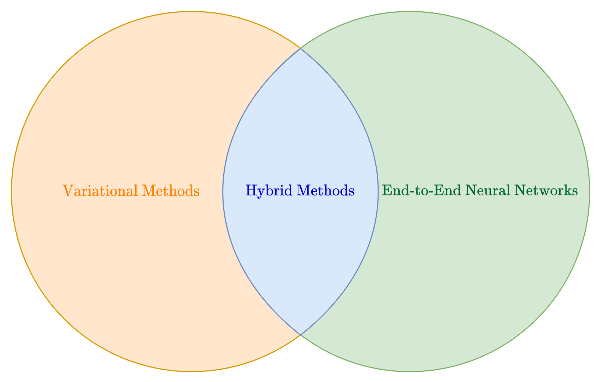
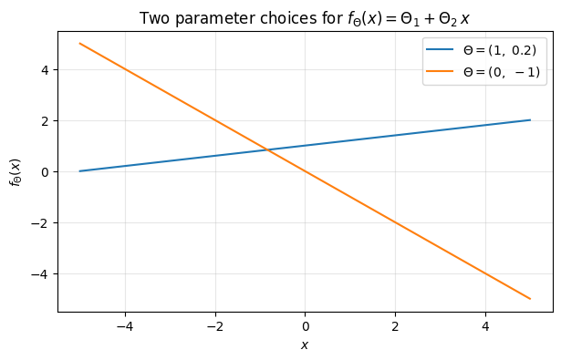
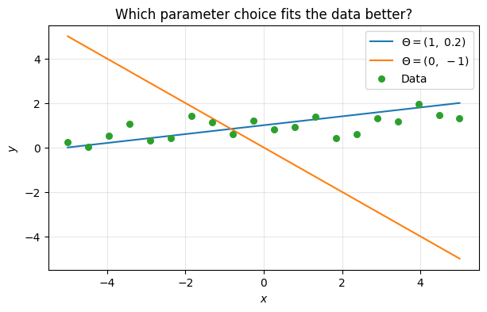
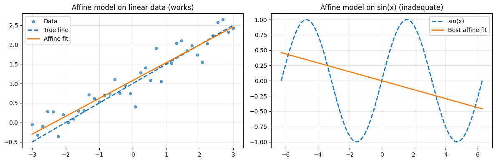
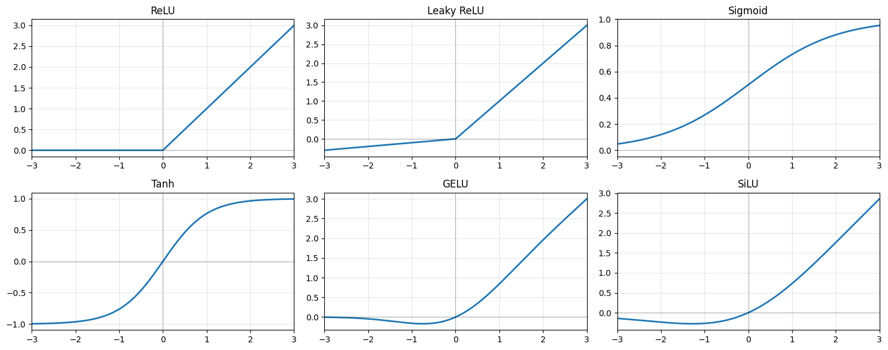
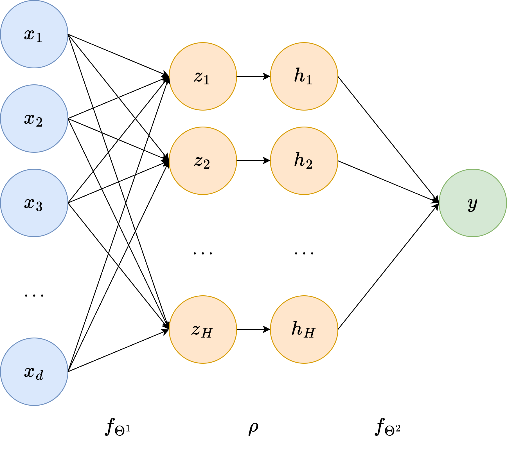
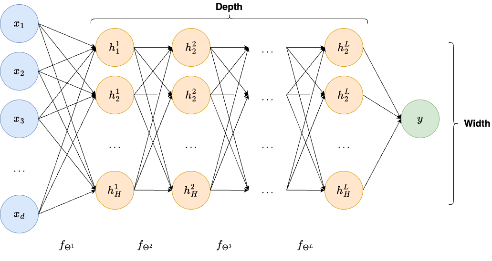

From Supervised Learning to Neural Networks#
Why This Chapter Comes First#
Before discussing CNNs [10], UNets [13], transformers [4], or generative models, it is important to fix the conceptual transition from classical inverse problems to learning-based reconstruction. If this transition is not made carefully, neural networks risk appearing as a completely separate subject, disconnected from the operator-theoretic and variational language of computational imaging. In reality, the connection is very direct.
In Module 1, the basic object of study was the forward model
where \(\boldsymbol{x}^\dagger \in \mathbb{R}^n\) denotes the unknown image, \(K \in \mathbb{R}^{m \times n}\) is the acquisition operator, and \(\boldsymbol{e} \in \mathbb{R}^m\) models the perturbation due to noise and model mismatch. The reconstruction problem was to recover \(\boldsymbol{x}^\dagger\) from \(\boldsymbol{y}^\delta\) by exploiting knowledge of \(K\), of the noise model, and of suitable regularity assumptions on the unknown image [8].
The learning-based viewpoint starts from exactly the same physical model, but modifies the strategy used to invert it. Instead of solving a new optimization problem for each datum, we collect a training set of examples and learn a parameterized inverse map directly from data.
Basics of Machine Learning#
{kind=link}

Before diving into the mathematical machinery of risk minimization, it is useful to set up the notation and intuitions that will be used throughout the course.
A learning problem is defined by a dataset of \(N\) input-output pairs:
where \(\boldsymbol{x}^{(i)} \in \mathbb{R}^d\) is the input and \(\boldsymbol{y}^{(i)} \in \mathbb{R}^s\) is the target output. The goal is to learn a parameterized function \(f_{\boldsymbol{\Theta}} : \mathbb{R}^d \to \mathbb{R}^s\) that correctly maps inputs to outputs beyond the training set. In this course, the input is a measured datum \(\boldsymbol{y}^\delta\) and the output is the unknown image \(\boldsymbol{x}^\dagger\) — the imaging notation reverses the ML convention because \(\boldsymbol{y}\) is reserved for measurements.
Warning
This setup assumes that all data is represented as real numbers. Handling non-numeric data such as categorical features is beyond the scope of this course; those interested should look into embedding techniques.
A concrete example. Machine learning is widely used to predict house prices based on property characteristics. Suppose each house is described by the following features:
\(x_1\): square footage;
\(x_2\): number of bedrooms;
\(x_3\): number of bathrooms;
\(x_4\): distance to the city centre;
\(x_5\): age of the house.
The goal is to predict the selling price \(y\) from these features, so \(\boldsymbol{x}^{(i)} \in \mathbb{R}^5\) and \(y^{(i)} \in \mathbb{R}\). Initially, the model has no knowledge of how these features influence price. By training on historical sales data it discovers patterns and estimates parameters that best fit the observations. Once trained, it can predict the price of new houses not seen during training.
Mathematical formulation. At its core, an ML model is a function \(f_{\boldsymbol{\Theta}} : \mathbb{R}^d \to \mathbb{R}^s\) whose behaviour is entirely determined by its parameter vector \(\boldsymbol{\Theta}\). The choice of \(s\) depends on the task: in a regression problem \(s\) is the number of predicted values; in image reconstruction \(s\) is the number of pixels. To build intuition, start with the simplest case \(d = s = 1\):
This is a straight line in the \((x, y)\) plane. The code below plots two different choices of \(\boldsymbol{\Theta}\) and shows how dramatically the prediction can change.
import numpy as np
import matplotlib.pyplot as plt
def f(theta, x):
return theta[0] + theta[1] * x
theta1 = (1, 0.2)
theta2 = (0, -1)
xx = np.linspace(-5, 5, 100)
plt.figure(figsize=(7, 4))
plt.plot(xx, f(theta1, xx), label=r'$\Theta = (1,\ 0.2)$')
plt.plot(xx, f(theta2, xx), label=r'$\Theta = (0,\ -1)$')
plt.grid(alpha=0.3)
plt.xlabel('$x$')
plt.ylabel(r'$f_\Theta(x)$')
plt.title(r'Two parameter choices for $f_\Theta(x) = \Theta_1 + \Theta_2\,x$')
plt.legend()
plt.show()

Think of \(x\) as the input and \(f_{\boldsymbol{\Theta}}(x)\) as the model’s prediction. Notice how different choices of \(\boldsymbol{\Theta}\) lead to very different outputs. Now overlay the training data on the same plot.
np.random.seed(42)
x_data = np.linspace(-5, 5, 20)
y_data = f(theta1, x_data) + np.random.normal(0, 0.5, x_data.shape)
plt.figure(figsize=(7, 4))
plt.plot(xx, f(theta1, xx), label=r'$\Theta = (1,\ 0.2)$')
plt.plot(xx, f(theta2, xx), label=r'$\Theta = (0,\ -1)$')
plt.scatter(x_data, y_data, s=30, zorder=3, color='C2', label='Data')
plt.grid(alpha=0.3)
plt.xlabel('$x$')
plt.ylabel('$y$')
plt.title('Which parameter choice fits the data better?')
plt.legend()
plt.show()

Which line fits the data better? The first one, parameterised by \(\boldsymbol{\Theta} = (1, 0.2)\) — and, as inspection of the data-generation code confirms, those are exactly the parameters used.
This illustrates two fundamental properties common to almost all ML models:
Different choices of \(\boldsymbol{\Theta}\) lead to very different predictions.
Given a training set, some parameter choices are better than others, and the process of finding the best choice is called training.
Linearity and its limits. Generalising to arbitrary dimensions, the affine model is
with \(s(d+1)\) parameters in total. Affine models are easy to analyse and optimize, but their expressivity is fundamentally limited: they can only represent linear functions of the input. Other classical ML methods — polynomial regression, Support Vector Machines (SVM), Random Forests, XGBoost — improve expressivity, but none of them are expressive enough for the complexity of image reconstruction tasks. The simplest way to see the limitation is to try to approximate \(\sin(x)\) with an affine model. The code below shows the failure directly.
import numpy as np
import matplotlib.pyplot as plt
np.random.seed(0)
x = np.linspace(-2 * np.pi, 2 * np.pi, 80)
y_true = np.sin(x)
# Best-fit affine model via least squares
X = np.column_stack([x, np.ones_like(x)])
theta = np.linalg.lstsq(X, y_true, rcond=None)[0]
y_linear = X @ theta
fig, axes = plt.subplots(1, 2, figsize=(12, 4))
# Left: affine model fits linear data well
x_l = np.linspace(-3, 3, 40)
y_l = 0.5 * x_l + 1.0 + 0.25 * np.random.randn(40)
w = np.linalg.lstsq(np.column_stack([x_l, np.ones(40)]), y_l, rcond=None)[0]
axes[0].scatter(x_l, y_l, s=20, alpha=0.7, label='Data')
axes[0].plot(x_l, 0.5 * x_l + 1.0, '--', linewidth=2, label='True line')
axes[0].plot(x_l, w[0] * x_l + w[1], linewidth=2, label='Affine fit')
axes[0].set_title('Affine model on linear data (works)')
axes[0].legend(); axes[0].grid(alpha=0.3)
# Right: affine model cannot fit sin(x)
axes[1].plot(x, y_true, '--', linewidth=2, label='sin(x)')
axes[1].plot(x, y_linear, linewidth=2, label='Best affine fit')
axes[1].set_title('Affine model on sin(x) (inadequate)')
axes[1].legend(); axes[1].grid(alpha=0.3)
plt.tight_layout()
plt.show()
print(f'Best-fit affine MSE on sin(x): {np.mean((y_linear - y_true)**2):.4f}')

Best-fit affine MSE on sin(x): 0.4218
Learning Formulation and Risk Minimization#
Assume that we have access to a dataset
where each pair consists of a measured datum and the corresponding ground-truth image. From a mathematical viewpoint, these pairs are sampled from an unknown probability distribution \(\mathbb{P}\) on the product space of data and images. The goal is to construct a function
depending on parameters \(\boldsymbol{\Theta}\), such that \(f_{\boldsymbol{\Theta}}(\boldsymbol{y}^\delta)\) is a good approximation of \(\boldsymbol{x}^\dagger\) whenever \((\boldsymbol{y}^\delta, \boldsymbol{x}^\dagger)\) follows the same law as the training data.
This is already a useful point to stress in class: a supervised neural reconstructor is not learning “the inverse of \(K\)” in a purely algebraic sense. It is learning an inverse map relative to a data distribution — trying to invert the forward model only on the subset of images considered plausible by the training set. Two consequences follow immediately. The quality of the training distribution is as important as the quality of the architecture: a perfectly designed network trained on poor or unrepresentative data will fail in deployment. And a network that performs excellently on one image class may fail on another, even with the same forward operator, because the learned inverse is tuned to the statistics of the training images rather than to the operator alone.
Population risk and empirical risk.
To define training mathematically, introduce a loss function
where \(\ell(\widehat{\boldsymbol{x}},\boldsymbol{x}^\dagger)\) measures the discrepancy between a reconstruction \(\widehat{\boldsymbol{x}}\) and the target image \(\boldsymbol{x}^\dagger\). The ideal objective is the population risk
Of course, the distribution \(\mathbb{P}\) is unknown, so one replaces it by the empirical distribution of the dataset and minimizes the empirical risk
This is the standard framework of supervised learning, but in the inverse-problems setting the interpretation is especially rich. A broad machine learning background for this viewpoint can be found in [5] and [2]. The connection between this framework and the specific structure of imaging inverse problems is developed in depth in [11]. The map \(f_{\boldsymbol{\Theta}}\) is not an arbitrary predictor. It is a learned regularized inverse. The training procedure tries to identify, inside a chosen model class, the map that best reconstructs typical images from typical measurements.
What the loss really measures.
At first sight, the choice of loss may seem secondary. In practice it is central, because it determines what kind of estimator the network is pushed to approximate.
If one uses the squared error
then the corresponding Bayes-optimal estimator is the conditional expectation
This means that MSE training pushes the network toward a posterior mean estimator. This is mathematically elegant, but it also explains a recurring phenomenon in imaging: if several reconstructions are compatible with the same data, then their average may be visually smoother than any actual plausible image. Hence the well-known tendency of MSE-trained models to blur high-frequency detail.
If instead one uses an \(\ell_1\) loss, the target becomes closer to a conditional median estimator. If one adds perceptual or adversarial terms, then one departs even further from a simple point estimator and starts favoring reconstructions that look realistic in a distributional sense.
Therefore, even before choosing the architecture, one should tell the students that the loss function is part of the inverse model. It encodes what is considered a good answer.
From Linear Predictors to Deep Nonlinear Models#
A natural starting point is the affine model
with \(W\in\mathbb{R}^{n\times m}\) and \(\boldsymbol{b}\in\mathbb{R}^n\). Such a model is attractive because it is easy to analyze, easy to optimize, and immediately connected to familiar linear inverse methods. However, it is limited in several decisive ways.
First, the map from measured data to stable reconstructions is usually not linear, even when the forward model is linear. Classical regularization already demonstrates this. For instance, the Tikhonov estimator [8]
depends on the regularization parameter, on the prior model, and on the noise level. If these ingredients are adapted to the observed datum, one immediately leaves the realm of simple fixed linear inversion.
Second, even when a linear estimator is mathematically admissible, it may be too rigid to capture the structure of natural images. Images are not arbitrary vectors. They exhibit local patterns, edges, textures, repeated motifs, and large-scale organization. A dense affine map treats all coordinates as generic features and does not encode any of this structure.
Third, the parameter count is prohibitive. Mapping an image-sized datum to an image-sized output through a full matrix is often infeasible. This already suggests the need for structured parameterizations.
import torch
torch.manual_seed(0)
x = torch.linspace(-1.0, 1.0, 41).unsqueeze(1)
y = x**2 + 0.10 * x
X = torch.cat([x, torch.ones_like(x)], dim=1)
theta = torch.linalg.lstsq(X, y).solution
y_affine = X @ theta
affine_mse = torch.mean((y_affine - y) ** 2).item()
mlp = torch.nn.Sequential(
torch.nn.Linear(1, 16),
torch.nn.ReLU(),
torch.nn.Linear(16, 1),
)
optimizer = torch.optim.Adam(mlp.parameters(), lr=5e-2)
for _ in range(600):
pred = mlp(x)
loss = torch.mean((pred - y) ** 2)
optimizer.zero_grad()
loss.backward()
optimizer.step()
with torch.no_grad():
y_mlp = mlp(x)
mlp_mse = torch.mean((y_mlp - y) ** 2).item()
print(f'Affine model MSE: {affine_mse:.6f}')
print(f'Tiny nonlinear network MSE: {mlp_mse:.6f}')
print()
print('Sample predictions:')
for idx in [0, 10, 20, 30, 40]:
print(
f'x={x[idx].item():+.2f} | target={y[idx].item():+.3f} '
f'| affine={y_affine[idx].item():+.3f} | mlp={y_mlp[idx].item():+.3f}'
)
Affine model MSE: 0.097825
Tiny nonlinear network MSE: 0.000165
Sample predictions:
x=-1.00 | target=+0.900 | affine=+0.250 | mlp=+0.876
x=-0.50 | target=+0.200 | affine=+0.300 | mlp=+0.209
x=+0.00 | target=+0.000 | affine=+0.350 | mlp=+0.017
x=+0.50 | target=+0.300 | affine=+0.400 | mlp=+0.315
x=+1.00 | target=+1.100 | affine=+0.450 | mlp=+1.088
Why depth alone does not help.
At this point students often ask a very reasonable question: why not simply compose several affine maps? The answer is an excellent pedagogical opportunity, because it isolates the real source of expressive power in neural networks.
Let
Then
which is again affine. Thus, stacking linear maps without additional nonlinear operations does not enlarge the model class in any essential way.
This is one of the cleanest moments in the course to explain why neural networks require nonlinear activation functions. Depth matters, but only once linearity has been broken.
The role of nonlinear activations.
Let \(\rho:\mathbb{R}\to\mathbb{R}\) be a scalar nonlinear function applied componentwise to vectors. A one-hidden-layer network takes the form
The choice of activation is a modelling decision with real consequences. The most commonly encountered activations in imaging architectures are listed here.
ReLU, \(\rho(t)=\max\{t,0\}\), is the default choice for convolutional networks. It is computationally cheap, avoids the vanishing-gradient problem that plagued earlier sigmoid-based architectures, and produces sparse activations — only positively activated units contribute. Its main weakness is that neurons receiving persistently negative input stop contributing entirely (dead neurons), which can slow or stall training.
Leaky ReLU, \(\rho(t)=\max\{\alpha t,\,t\}\) with small \(\alpha>0\), is a simple remedy: a small non-zero slope on the negative half-line ensures gradients can always flow back, preventing the dead-neuron problem while preserving most of the computational advantages of ReLU.
Sigmoid, \(\sigma(t)=\frac{e^t}{1+e^t}\), and Tanh, \(\tanh(t)=\frac{e^t-e^{-t}}{e^t+e^{-t}}\), are among the oldest activations. Both saturate for large \(|t|\), causing vanishing gradients in deep networks, which is why they have largely been replaced by ReLU in hidden layers. They remain relevant as output nonlinearities and in gated recurrent architectures such as LSTMs.
GELU is a smooth, differentiable activation motivated by stochastic regularisation. It is the standard choice in transformer-based architectures, where its smoothness interacts better with the self-attention mechanism than the hard thresholding of ReLU.
SiLU (Sigmoid Linear Unit), \(\rho(t)=t\cdot\sigma(t)\), is a smooth, self-gated activation closely related to GELU and used in EfficientNet and several other modern convolutional architectures.
Softmax, \(\mathrm{softmax}(\boldsymbol{z})_i = e^{z_i}/\sum_j e^{z_j}\), maps a real-valued vector to a probability distribution. It is not used as a hidden-layer activation but appears as a final-layer nonlinearity in classification tasks and, in image segmentation, converts the output feature map into per-pixel class probabilities.
The role of the activation is deeper than simply introducing nonlinearity. It shapes the geometry of the function class. A ReLU network represents a piecewise affine map whose number of affine regions grows exponentially with depth — a concrete hint of why deep networks can approximate highly complex measurement-to-image relationships.
import numpy as np
import matplotlib.pyplot as plt
xx = np.linspace(-3, 3, 300)
relu = lambda x: np.maximum(0, x)
lrelu = lambda x: np.where(x > 0, x, 0.1 * x)
sigmoid = lambda x: 1 / (1 + np.exp(-x))
tanh_fn = lambda x: np.tanh(x)
gelu = lambda x: 0.5 * x * (1 + np.tanh(np.sqrt(2 / np.pi) * (x + 0.044715 * x**3)))
silu = lambda x: x * sigmoid(x)
activations = [
('ReLU', relu(xx)),
('Leaky ReLU', lrelu(xx)),
('Sigmoid', sigmoid(xx)),
('Tanh', tanh_fn(xx)),
('GELU', gelu(xx)),
('SiLU', silu(xx)),
]
fig, axes = plt.subplots(2, 3, figsize=(15, 6))
for ax, (name, y) in zip(axes.flat, activations):
ax.plot(xx, y, linewidth=2)
ax.axhline(0, color='k', linewidth=0.5, alpha=0.4)
ax.axvline(0, color='k', linewidth=0.5, alpha=0.4)
ax.set_title(name)
ax.set_xlim(-3, 3)
ax.grid(True, alpha=0.3)
plt.tight_layout()
plt.show()

{kind=link}

Notation#
The diagram above makes the architecture concrete. Any neural network can be represented as a layered graph in which each node is called a neuron. The layers are:
Input layer (\(d\) neurons): holds the input \(\boldsymbol{x}\) directly.
Hidden layer(s) (\(H\) neurons each, with \(H\) the hidden dimension — a user-defined hyperparameter): intermediate representations not directly observable from outside. The \(i\)-th neuron in a hidden layer computes $\(z_i = \boldsymbol{w}_i^\top \boldsymbol{x} + b_i,\)\( where \)\boldsymbol{w}_i\( and \)b_i\( are the neuron-specific **weights** and **bias**, represented as the edges connecting the previous layer to \)z_i\(. The activation function then maps \)z_i \mapsto h_i = \rho(z_i)$.
Output layer (\(s\) neurons): produces the final prediction \(\boldsymbol{y}\).
The name hidden layer reflects the fact that its values are internal to the computation. Neurons in the input layer are sometimes called the visible units.
Warning
A common misunderstanding is to think that depth alone creates expressivity. Without nonlinear activation functions, composing affine maps still produces an affine map. This is why the activation is a structural ingredient, not an optional embellishment.
Neural networks as learned regularizers.
A very useful bridge with classical inverse problems is the following interpretation. Even if a neural network is trained end-to-end, one can view it as approximating the solution map of a variational problem of the form
where \(\mathcal{D}\) is a data-fidelity term and \(\mathcal{R}\) is a regularizer. This is precisely the MAP estimator under the prior \(p(\boldsymbol{x}) \propto e^{-\mathcal{R}(\boldsymbol{x})}\): the regularizer and the log-prior are the same object.
The network does not make \(\mathcal{D}\) and \(\mathcal{R}\) explicit. What it does, through training on paired data, is absorb an implicit model of both the forward physics and the image prior into its weights. A network trained with MSE loss on samples from the correct distribution will converge toward the Bayes-optimal estimator — which is exactly the MAP estimator when the prior matches the data. The regularizer the network learns is encoded not as a formula but as a pattern of activations across all its layers.
This has a direct practical implication. The quality of the implicit regularizer is limited by the quality and diversity of the training distribution. A network trained on a narrow image class carries a strong, restrictive prior. A network trained on diverse data carries a weaker, more flexible one. Knowing this helps explain many failure modes observed when such networks are applied outside their training distribution.
Deep Neural Networks.
The one-hidden-layer architecture above can be extended by stacking \(L\) hidden layers, each taking the output of the previous layer as input and applying the same linear-transformation-plus-activation structure. A network with many hidden layers is a deep neural network, and the body of algorithms built on such architectures is called Deep Learning. The depth \(L\) and the width \(\max_\ell H_\ell\) (the largest number of neurons across all hidden layers) are the two primary descriptors of a network’s capacity.
Depth, features, and internal representations.
For a deep network we write
The vectors \(\boldsymbol{h}_\ell\) are the internal features produced by the network. In early layers, one typically finds detectors of simple local events: oriented edges, contrast boundaries, and repeated low-level textures. In an imaging context these are exactly the elementary structures that acquisition artifacts and noise distort most noticeably. In the middle layers, elementary features are combined into larger-scale structures — in a medical image this might mean organ boundaries or characteristic geometric patterns of the imaging geometry. In the deepest layers, representations become task-specific: they encode the difference between a true anatomical structure and a reconstruction artifact, or between a genuine edge and ringing introduced by truncation of the measurement.
The network is therefore not only computing a final answer. It is building a progressive and increasingly abstract description of the datum, layer by layer. This hierarchical viewpoint explains why depth matters beyond pure approximation power: a shallow model may approximate the same function in principle, but it cannot organize the computation into a reusable hierarchy of descriptors, which leads to much worse parameter efficiency and generalization.
{kind=link}

Universal approximation is not the end of the story.
The universal approximation theorem is often cited when introducing neural networks. It states, roughly speaking, that sufficiently large networks can approximate continuous functions on compact sets [3]. This result is mathematically important because it proves that nonlinear networks are not fundamentally limited in the way linear models are.
However, this theorem should not be overemphasized in a computational imaging course. In practice, one does not only care about approximation in an abstract sense. One also cares about:
how many parameters are needed;
whether the model can be trained stably;
how the architecture reflects known properties of images;
whether the reconstructor is robust to noise and operator mismatch.
In other words, the relevant question is not only can a neural network represent the desired inverse map, but rather which neural network architecture represents it efficiently and stably.
This is the precise point at which the course naturally moves from generic neural networks to image-specific architectures.
Optimization, Backpropagation, and Generalization#
Training a neural network means solving the nonconvex optimization problem
The main computational tool is backpropagation [14], which is simply an efficient implementation of the chain rule through the computational graph. If the training loss is denoted by \(L(\boldsymbol{\Theta})\), then the gradient descent update reads
In practice one rarely computes the full empirical gradient. Instead one uses minibatches and obtains a stochastic approximation:
where \(B_k\) denotes the current batch.
This point should be connected to numerical optimization from Module 1. Neural-network training is still numerical optimization. The novelty is not the existence of optimization, but the scale, nonconvexity, and parameterization of the problem.
import torch
layer = torch.nn.Linear(1, 1)
x = torch.tensor([[2.0]])
target = torch.tensor([[1.0]])
prediction = layer(x)
loss = torch.mean((prediction - target) ** 2)
loss.backward()
print('Prediction:', prediction.item())
print('Loss:', loss.item())
print('Gradient with respect to the weight:', layer.weight.grad.item())
print('Gradient with respect to the bias:', layer.bias.grad.item())
Prediction: 0.5673959255218506
Loss: 0.18714629113674164
Gradient with respect to the weight: -1.7304162979125977
Gradient with respect to the bias: -0.8652081489562988
Statistical generalization.
Another key topic to explain explicitly is generalization. A network may minimize the training loss very well and still fail on new data. In the inverse-problems setting this issue is even more delicate because the test datum may differ from training not only in image content, but also in:
noise level;
acquisition geometry;
calibration;
discretization;
anatomical class or object class.
Thus, when we say that a network generalizes, we mean that the learned inverse map remains reliable under realistic variation in both the unknown image and the measurement process.
This is why one should teach students very early that reconstruction quality cannot be separated from dataset design. A model trained on unrealistic synthetic pairs may generalize only inside a narrow artificial world.
Why the next step must be image-specific architectures.
At this point the motivation for image-oriented architectures is clear. Fully connected networks are conceptually useful but computationally and statistically inefficient for images. They do not respect locality, do not exploit translational patterns, and ignore the geometry of the image grid.
Once the idea of a learned inverse map is clear, one asks how to design the architecture so that it matches the structure of image data. The principal answers developed in the imaging literature are:
Convolutional networks [10], which exploit locality and translation invariance through shared filter banks, dramatically reducing parameter count while encoding the inductive bias that meaningful patterns are local and can appear anywhere in the image;
Residual networks [6], which enable very deep architectures by adding identity skip connections that preserve gradient flow and allow later layers to refine rather than relearn earlier representations;
Encoder-decoder networks such as the U-Net [13], which process the image at multiple spatial resolutions and use skip connections to preserve fine-scale detail — the architecture that has become the de facto standard for image-to-image learning in medical and scientific imaging;
Attention mechanisms and vision transformers [4], which allow long-range dependencies between spatially distant image regions, going beyond what a purely local convolutional approach can capture.
Each of these is not a generic computational trick. It is a structured response to a specific property of images and of the inverse problems defined on them.
Summary#
This chapter should leave the students with a precise conceptual map:
supervised reconstruction is empirical risk minimization over parameterized inverse maps;
the loss function determines the statistical target of the estimator;
affine models are too limited for realistic imaging tasks;
nonlinear activations make expressive inverse modeling possible;
neural networks can be interpreted as learned regularized reconstructors;
the structure of images demands specialized architectures rather than generic dense networks.
Exercises#
Show explicitly that the composition of three affine maps is still affine.
Explain in your own words why the loss function changes the statistical estimator learned by the network.
Give one example of an inverse problem where a linear estimator is mathematically natural, and explain why it may still be inadequate in practice.
Discuss why image geometry suggests using structured architectures instead of generic fully connected networks.
Further Reading#
For a comprehensive treatment of the supervised learning framework and the statistical foundations of neural network training, see [5] and [2]. The theoretical and probabilistic foundations of inverse problems — including the role of noise, regularization, and prior information — are developed rigorously in [8]. The specific question of how deep learning techniques apply to imaging inverse problems — including the risk minimization perspective, generalization considerations, and connections to classical reconstruction theory — is surveyed in [11].
The original backpropagation algorithm is due to [14]; understanding this paper remains one of the best ways to internalize what automatic differentiation actually computes.
When revising this chapter, it is especially useful to keep asking which statements are about approximation power, which are about optimization, and which are about statistical generalization. A good exercise is to revisit each formula and ask how it changes once the input is an image rather than a generic vector. That question leads naturally to the architectural material of the next chapter.